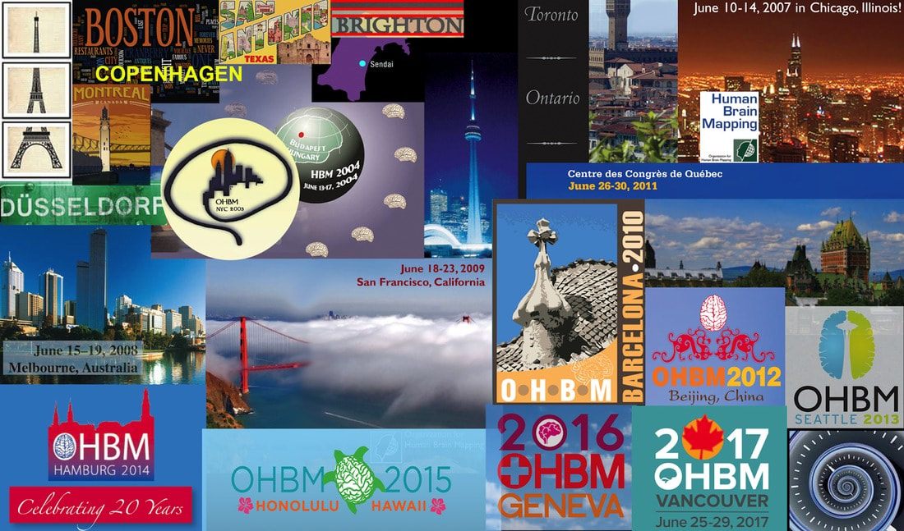
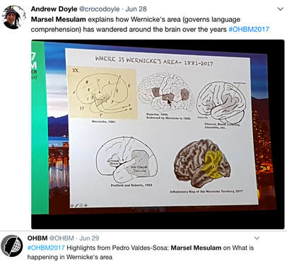

Innovation doesn't come just from giving people incentives; it comes from creating environments where their ideas can connect. June 28th 2017, Vancouver, 4:30 am Looking out the window in that predawn hour, it was like peering into the black box of time itself, a place where the past, present, and future come together. But as I watched, the sky played with at least a thousand permutations of midnight blue, before it burst into all hues of gold and red. It was at that moment that I thought to myself … “it’s gonna be a great ride today”. Because, not only was I launching the OHBM Student and Postdoctoral Special Interest Group’s inaugural Mentorship Symposium that afternoon, an initiative that I ardently hoped would continue in future years, but also would I be interviewing Marsel Mesulam, a founding member of OHBM and a longstanding academic inspiration of mine. June 28th 2017 was the day I was going to board the OHBM time machine to record an oral history of neuroimaging from one of the pioneers of the field, and gain his perspective on its future.  Organization of Human Brain Mapping - An incredible journey thus far! AmanPreet Badhwar (AB): I would like to start by asking you about your background and why and how you became interested in neuroimaging. Twitter feeds relating to Marsel's lecture at OHBM 2017 Marsel Mesulam (MM): I started Neurology residency way back, I believe in 1973 or 1974, and I was at that time trying to make a choice between psychiatry, psychology, and neurology, so it was very clear that the common theme in all three was brain function. The question was how I was going to approach it. I decided to go into neurology, and that was largely due to the influence of Geschwind, who was then at Boston City Hospital and teaching at the Harvard Medical School, where I was a student. Neuroanatomy became my main research area. So, with Deepak Pandya and Gary Van Hoesen, I carried out a number of neuroanatomical studies. I developed a method for tracing cortical projections in the primate brain. Neuroanatomy, and how it relates to animal models and complex behaviour, such as memory and attention, was my primary interest at that time. Since I was also a neurologist, I was trying to apply this information to my patients. When I was doing my training, there were no CT scans available. So at that time those of us doing very detailed neuroanatomy in monkeys, well when we tried to translate what we learnt into the human brain, there was really nothing. My first CT scan experience was like an epiphany, where I said “my goodness”!! At that time CT scans were very, very noisy. So then, one development followed another, and there were better CT scans. The first serious demonstration of fMRI was reported in Jack Belliveau’s paper in Science, and just before that he actually called me and said “come to my laboratory --- you’re gonna see something that you would not believe”. This was a Saturday, and we used to have a summer place we used to go to, so I had to make a special arrangement not to go away, and instead went to Jack Belliveau’s lab. That day the experiment did not work! Over the next few months or so everything started to work, and there was this Science paper that was a revolution in the field. I mean the ability to see function in the living human brain, and with decent anatomy! Those developments made me shift my laboratory focus from primate connection neuroanatomy to imaging, so I could apply what I learnt in the monkey to the human brain in neurological patients with specific lesions. That’s how I got interested in the field. AB: What was it about the fMRI experience that moved you --- the protocol, the equipment, the potential knowledge to be gained or simply the esthetic beauty of the end product - the image? What inspired you to shift gears from traditional neuroanatomy to imaging? MM: For people who do the kind of work that I do, which makes up the majority of OHBM members, our algorithm is “where in the brain does such and such happen”, i.e. localization of function from the ‘very, very simple one area, one center’ to a ‘very, very complicated and parallel distributed processing’. The beauty of new modalities, like fMRI and PET, is suddenly the ability to see function in a real brain in anatomical terms. And that was an absolute revolution! I cannot think of any other event in the history of cognitive neuroscience that made such a difference. So the beauty is inherent in the anatomy of the human brain. What the imaging did is that it allowed us to see and experience this beautiful complexity in a living human brain. AB: You are a giant in the field of neurodegeneration. What do you feel are your most significant contributions? MM: That’s a good question, a humbling question. You know I don’t think I would be able to name any single contributions in the imaging area. But in contrast, there are things that I did in my neuroanatomy days that were new discoveries. The beauty about neuroanatomy is that it changes over millions of years. So once you discover something, it’s true for a few million years. And I have made some discoveries in neuroanatomy that were published maybe 30 to 35 years ago and are as true today as they were then. In the field of imaging we are dealing with a much more flexible, shifting atmosphere in that things that are discovered evolve over time. Truth is much more elusive in imaging. So I have published lots of articles, but I must say that I can’t point out to something and say that this discovery has withstood the test of time, that’s not the sort of thing that imaging lends itself to. My first involvement in functional imaging was in the network for spatial attention; I did the neuroanatomy in the monkey, and then applied it to the human. In fact I wrote a paper a long time ago called ‘Large scale neurocognitive networks and distributed processing for attention, language, and memory’, that was one of the first times the word ‘networks’ was used for human cognition. It was based on my adaptation of the macaque monkey cortical interconnections to the human spatial attention network and hemispatial neglect syndrome. In that way I was able to apply the physiology and anatomy of networks that was described in the monkey to the human condition and then take it to functional imaging to confirm the relationship between the two. So I came up with a system of serial connections embedded in parallel connections to come up with the principles of distributed processing in cognitive networks. I think that is a lasting contribution even though it has been much embellished and improved, but it’s not a single finding, it’s a conceptualization. And then my recent work in primary progressive aphasia and language, I think that it is adding something to the field. AB: Being involved with OHBM from the very beginning you see the big picture of human brain mapping as a field. How do you see neuroimaging moving forward? Do you still expect really big changes? MM: Yes. Yes. Its an issue of specificity, of resolution. Resolution in space. Resolution in time. But it’s important to have a sense of perspective. Sometimes when students and postdocs come, they tend to be very focused on methods. And they say, “we would like a 7 Tesla” , or we would like this and that, i.e. more precise measurements. I give them the following thought experiment: let’s assume I give you the following apparatus that will allow you to put the intracellular electrode in all 40 billion neurons with recordings. What will you do with the information? You really need no more precision than your conceptual framework requires. So every time there is a new development we have to take a deep breath and say, how do we integrate this precision with our concepts of brain function before going further. OHBM has done that beautifully. When we started initially, PET scanning was dominant, fMRI was just coming in. And now we have more precision, more powerful magnets, more analytical methods. So there is a tremendous set of advances, alongside conceptual advances --- the task is to integrate the two, and see where we go. But as a society, I think this is a tremendous success story from where things started back in Paris in 1995 to where things are now. One thing I have always liked about the OHBM -- there is a tremendous amount of young people who get interested in this, and that’s great! AB: I would be interested in knowing how OHBM come together as an organization? Also, how has it evolved over the years? MM: In 1994 I got an invitation to attend a meeting in Paris. I believe it was Bernard Mazoyer who convened the meeting. It was something about imaging at that time, PET scanning was the main modality. At that time there was no OHBM, and it was not entirely clear where this meeting would go. It was absolutely a fantastic meeting! It left the desire to do it again. The decision was made to go to Boston in 1996. Bruce Rosen took responsibility to organize this meeting, and the story is that he had to mortgage his house to guarantee the financial backing of this meeting.
In 1996 there was a huge debate of what to name this group. There were people who said it had to be a Society, but there was a tremendous pushback because people said that a Society means that you have to pay dues, and we don’t want to pay dues. All we want to do is organize a yearly meeting. So it was called the ‘Organization’. Of course now we pay dues! With dues we started to have enough money that we could back the financial risk of the meeting without having to mortgage our houses. Then I joined the council. There, we wrote the bylaws that you now follow, to have a committee of current president, the president-elect, and the past president, so three in each of the various levels. I actually wrote the rules for that. Of course it went through council discussions and modifications. Those were the formative years.
There were also some watershed meetings. For example, I was interested in writing a review or commentary from my point of view as a neurologist, and what made it possible for me to write this paper which was titled “From sensation to cognition”, was what I saw in the Copenhagen meeting. Because the Copenhagen meeting was the first time that fMRI really showed what it could do. That was the first time that we saw functional imaging of the face area, of memory circuits, it was a fantastic meeting. Every year has its own personality. These days there are a lot more topics, a lot more multidisciplinary interactions, and a lot of energy. AB: Do you find there is a greater proportion of students now, or have the demographics remained similar? MM: It’s pretty similar. There is always this tremendous energy coming from young people. Students, postdocs, and that’s the driving force behind the society. It’s always been that way. It was never top heavy! There was always the encouragement of young people to participate as much as possible. In fact, I have now been invited to be on the scientific advisory committee board, they took the ancients and put them together in a committee (MM smiles), and one thing I suggested is that the council should have a representative from postdocs and students so that your voice could be heard at the decision making level which may be helpful. AB: That’s really wonderful to hear!!! AB: It was wonderful talking to you, revisiting OHBM’s initial days, and discussing its role in the future of neuroimaging. Thank you for taking the time out of your busy schedule and making this interview possible. Thanks also to Sarabeth Fox for filming.
0 Comments
Your comment will be posted after it is approved.
Leave a Reply. |
BLOG HOME
Archives
August 2023
|
 RSS Feed
RSS Feed